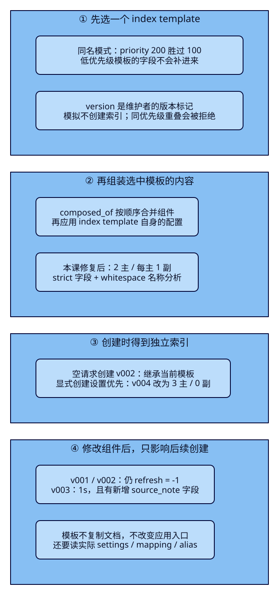
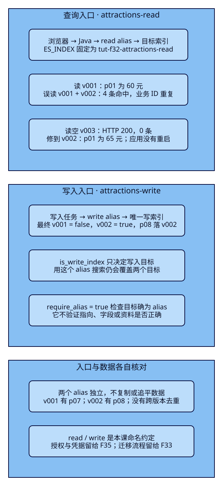

版本索引换了名字，
后端还要跟着改吗？
旅游搜索已经能在多节点上运行。运营准备了第二版景点资料：索引名字变了，Java却还连着第一版；另一次新建又漏写了名称分析器。同样的“西湖”查询，结果可能停在旧价，也可能因字段不同而变了。本课分开解决创建规则和访问入口：用模板组织新索引配置，用alias给后端一个稳定名字，再用真实目标、字段和命中证明它指对了。
学完能用输出证明什么
- 模拟竞争模板，解释priority与version的区别；核对新索引继承、创建时覆盖，以及旧索引不会被模板倒改。
- 让同一个Java进程始终查询read alias，解释多目标查询、重复业务ID与唯一写入目标，核对写响应的_index。
- 复现缺失alias、无写索引、两个写索引及空目标错误；修复后提交完整资料、查询和读写指向证据。
本课目录
图解跳转：01 · 模板选择与继承 · 02 · 查询集合与写入目标
1. 创建规则与访问入口各管一件事
ES中的普通索引有自己的文档、字段规则和分片配置。tut-f32-attractions-v001里的p01与v002里的p01，是两个独立文档；版本后缀只是维护者的命名约定，ES不会据数字认定哪份更新，也不会自动复制资料。业务数据库仍保存业务事实，本课用固定文件模拟两份搜索投影。
假如每次新建都手抄mapping和settings，就可能漏掉整数金额、strict或名称分析器。模板是创建时可复用的规则：根据准备创建的索引名，算出应使用的配置。它既不存景点文档，也不代表当前线上版本。索引已经创建之后，再修改模板，不会回头修改这个索引。
alias则是已存在索引的另一个入口名字。Java可以配置tut-f32-attractions-read，由ES把它解析到当前挂载的物理索引；后台写入任务使用tut-f32-attractions-write，明确把新文档送往哪一版。模板回答“新建时是什么结构”，alias回答“这次请求去哪里”。它们可以配合，但创建了模板不等于应用入口已经调整，调整alias也不等于资料已经迁移完整。
2. 先选一个模板，再合成它的组件
本课使用composable index template，由index_patterns匹配名称，priority决定多个匹配模板谁胜出。把常用字段和常用设置拆为component template，再通过composed_of引用；组件本身不会按名字直接应用到索引。这里的“可组合”是组装选中模板引用的组件，不是把所有匹配的index template叠在一起。
先看一个容易出错的对照：正常模板priority=100、version=32，临时模板priority=200、version=1，两者都匹配tut-f32-attractions-v*。临时模板胜出，正常模板中的city_code和strict不会自动补上。version与_meta是维护元数据，不参与这个优先级比较。同优先级又有重叠匹配的模板，在本课创建时就被拒绝，不能依赖最后提交者获胜。
选中模板后，组件按composed_of顺序合成，后面的同名设置覆盖前面的；index template自身设置再覆盖组件设置；创建索引请求里的显式设置又优先于模板。mapping还要满足字段定义兼容性，不能把不同类型冲突理解成任意覆盖。本课的覆盖实验只改变settings。模拟给出模板解析结果，实际创建请求还可能带覆盖值，最终仍要读取索引自己的配置。

官方依据与固定v9.4.0实现入口
模板选择与合成规则、两种模板模拟是API说明。固定tag的findV2Template选择胜者，resolveSettings按组件顺序再合入模板本身。本课5份目标源码与官方tag字节核对不替代后面的真实ES输出。
3. 独立两节点，固定两个版本
本课ES9.4.0/Lucene10.4.0独立运行在19632、19633，仅绑定127.0.0.1，无认证。n1为master/data/ingest，n2为data；唯一master候选n1不停止。两进程在同一Docker VM，共享物理资源，不代表跨机器容灾。每节点192MiB堆、640MiB容器上限只用于小样本；启动前检查Docker内存。本课不改变其他课集群，也不让Pages直接访问本机ES。
首次只有两个基础卷都不存在时使用bootstrap，成团后移除引导名单并核对UUID/node ID。原卷完整时直接重启；缺一份卷时脚本拒绝重新引导。通用配置和等待保留在稳定Compose、首次引导与完整脚本中。
cd projects/travel-search
python3 labs/f32/lab.py start --out /tmp/f32-reader-setup另一终端先将JAVA_HOME/PATH指向完整JDK25。沿用Boot4.0.8、Java与Rest5 Client9.4.8；应用JDK与ES内置JVM分别记录。构建现有搜索服务，并为独立的官方客户端写入练习生成classpath：
cd projects/travel-search/backend
./mvnw -B -ntp clean package dependency:build-classpath -Dmdep.outputFile=target/f32-classpath.txt
ES_URL=http://127.0.0.1:19632 ES_INDEX=tut-f32-attractions-read APP_PORT=18082 \
java -jar target/travel-search-0.7.0.jar此时read alias还没创建，提交搜索会失败；先让实验建好资料。回到项目目录运行三个案例，收据目录必须是新目录。每轮都先点名清理本课索引、模板和组件；手工执行与完整脚本二选一，不在脚本中途混入请求：
export APP_URL=http://127.0.0.1:18082
python3 labs/f32/lab.py run --out /tmp/f32-reader-round1v001、v002各有6份固定景点，只有p01价格不同：旧版6000分，新版6500分。p01/p02满足“西湖、HZ、在售、CNY、0至20000分、3km内”；p03超预算，p04城市不符，p05下架，p06不含西湖。名称使用带空格的合成词项和whitespace，以排除中文分词方案差异。两版都来自独立文件，没有执行reindex或持续同步。随后p07只写进旧版，p08只写进新版，两者名称含“西溪”，不进入西湖结果。
旧版完整6份资料；新版仅p01改成6500分
{"create":{"_id":"p01"}}
{"attraction_id":"p01","name":"西湖 湖畔","city_code":"HZ","ticket_price_fen":6000,"currency":"CNY","status":"open","location":{"lat":30.25,"lon":120.15}}
{"create":{"_id":"p02"}}
{"attraction_id":"p02","name":"西湖 公园","city_code":"HZ","ticket_price_fen":0,"currency":"CNY","status":"open","location":{"lat":30.251,"lon":120.15}}
{"create":{"_id":"p03"}}
{"attraction_id":"p03","name":"西湖 山居","city_code":"HZ","ticket_price_fen":30000,"currency":"CNY","status":"open","location":{"lat":30.252,"lon":120.15}}
{"create":{"_id":"p04"}}
{"attraction_id":"p04","name":"西湖 古街","city_code":"FZ","ticket_price_fen":1000,"currency":"CNY","status":"open","location":{"lat":30.251,"lon":120.15}}
{"create":{"_id":"p05"}}
{"attraction_id":"p05","name":"西湖 故居","city_code":"HZ","ticket_price_fen":5000,"currency":"CNY","status":"closed","location":{"lat":30.253,"lon":120.15}}
{"create":{"_id":"p06"}}
{"attraction_id":"p06","name":"运河 西溪","city_code":"HZ","ticket_price_fen":1000,"currency":"CNY","status":"open","location":{"lat":30.25,"lon":120.15}}新版文件为v002.ndjson；可读JSON、p07/p08/p09各自的完整字段位于实验入口。
4. f32-c01：模拟正确后，还要核对实际创建
先在模板建立之前创建v001。其1主/每主1副/refresh=-1和完整strict mapping均显式给出，避免用动态推断作为旧版基线。之后登记设置与字段两个组件，再登记正常模板。字段组件包含F07所需7个字段，以及用于观察继承的可选keyword字段source_batch；文档不必填写这个可选字段。
完整旧版创建请求与字段组件
{
"settings": {
"number_of_shards": 1,
"number_of_replicas": 1,
"refresh_interval": "-1"
},
"mappings": {
"dynamic": "strict",
"properties": {
"attraction_id": {
"type": "keyword"
},
"name": {
"type": "text",
"analyzer": "whitespace"
},
"city_code": {
"type": "keyword"
},
"ticket_price_fen": {
"type": "integer",
"coerce": false
},
"currency": {
"type": "keyword"
},
"status": {
"type": "keyword"
},
"location": {
"type": "geo_point"
}
}
}
}{
"version": 1,
"_meta": {
"lesson": "f32"
},
"template": {
"mappings": {
"dynamic": "strict",
"properties": {
"attraction_id": {
"type": "keyword"
},
"name": {
"type": "text",
"analyzer": "whitespace"
},
"city_code": {
"type": "keyword"
},
"ticket_price_fen": {
"type": "integer",
"coerce": false
},
"currency": {
"type": "keyword"
},
"status": {
"type": "keyword"
},
"location": {
"type": "geo_point"
},
"source_batch": {
"type": "keyword"
}
}
}
}
}{
"version": 1,
"_meta": {
"lesson": "f32"
},
"template": {
"settings": {
"number_of_shards": 2,
"number_of_replicas": 1,
"refresh_interval": "-1"
}
}
}{
"index_patterns": [
"tut-f32-attractions-v*"
],
"priority": 100,
"version": 32,
"_meta": {
"lesson": "f32"
},
"composed_of": [
"tut-f32-settings",
"tut-f32-fields"
],
"template": {}
}临时模板故意采用3主、0副、name=keyword，且不引用组件。预测：若它的priority=200，高于正常模板100，模拟结果还会有city_code吗？
{
"index_patterns": [
"tut-f32-attractions-v*"
],
"priority": 200,
"version": 1,
"_meta": {
"lesson": "f32"
},
"template": {
"settings": {
"number_of_shards": 3,
"number_of_replicas": 0,
"refresh_interval": "-1"
},
"mappings": {
"dynamic": true,
"properties": {
"name": {
"type": "keyword"
}
}
}
}
}export F32_ES=http://127.0.0.1:19632
curl -sS -X PUT "$F32_ES/tut-f32-attractions-v001" -H 'Content-Type: application/json' --data-binary @search/f32/create-old.json
curl -sS -X PUT "$F32_ES/_component_template/tut-f32-settings" -H 'Content-Type: application/json' --data-binary @search/f32/component-settings.json
curl -sS -X PUT "$F32_ES/_component_template/tut-f32-fields" -H 'Content-Type: application/json' --data-binary @search/f32/component-fields-v1.json
curl -sS -X PUT "$F32_ES/_index_template/tut-f32-attractions" -H 'Content-Type: application/json' --data-binary @search/f32/template.json
curl -sS -X PUT "$F32_ES/_index_template/tut-f32-shadow" -H 'Content-Type: application/json' --data-binary @search/f32/template-shadow.json
curl -sS -X POST "$F32_ES/_index_template/_simulate_index/tut-f32-attractions-v002"
curl -sS -X PUT "$F32_ES/_index_template/tut-f32-equal" -H 'Content-Type: application/json' --data-binary @search/f32/template-shadow.json实测模拟得到3主、name=keyword，只有临时模板的字段；overlapping列出被压过的正常模板。最后一个请求用同一priority=200再登记重叠模板，返回400，reason含same priority。修复方法是删除临时模板，让正常模板胜出，再模拟名称；按模板名模拟则用于检查指定模板自身合成内容，两种问题要分清。模拟不会创建v002，脚本用HEAD=404证明这一点。
curl -sS -X DELETE "$F32_ES/_index_template/tut-f32-shadow"
curl -sS -X POST "$F32_ES/_index_template/_simulate_index/tut-f32-attractions-v002"
curl -sS -X POST "$F32_ES/_index_template/_simulate/tut-f32-attractions"
curl -sS -I "$F32_ES/tut-f32-attractions-v002"
curl -sS -X PUT "$F32_ES/tut-f32-attractions-v002" -H 'Content-Type: application/json' -d '{}'
curl -sS "$F32_ES/tut-f32-attractions-v002/_settings?flat_settings=true"
curl -sS "$F32_ES/tut-f32-attractions-v002/_mapping"现在空请求创建的v002实际有2主/每主1副、strict、name=whitespace和source_batch；v001仍1主，且没有source_batch。再更新两个组件：刷新间隔改为1s，字段增加source_note=keyword，version改为2。它们是后续创建的新规则，不能据组件更新响应推断现有索引也变了。
{
"version": 2,
"_meta": {
"lesson": "f32"
},
"template": {
"settings": {
"number_of_shards": 2,
"number_of_replicas": 1,
"refresh_interval": "1s"
}
}
}curl -sS -X PUT "$F32_ES/_component_template/tut-f32-settings" -H 'Content-Type: application/json' --data-binary @search/f32/component-settings-v2.json
curl -sS -X PUT "$F32_ES/_component_template/tut-f32-fields" -H 'Content-Type: application/json' --data-binary @search/f32/component-fields-v2.json
curl -sS -X POST "$F32_ES/_index_template/_simulate_index/tut-f32-attractions-v003"
curl -sS -X PUT "$F32_ES/tut-f32-attractions-v003" -H 'Content-Type: application/json' -d '{}'
curl -sS -X PUT "$F32_ES/tut-f32-attractions-v004" -H 'Content-Type: application/json' --data-binary @search/f32/create-override.json第二版字段组件保留原字段并增加source_note。v004创建请求故意覆盖设置为3主、0副、refresh=-1；0副本仅是本课优先关系对照，不代表运行建议。四个索引的实际结果如下，此时它们文档数全部为0：
{
"settings": {
"number_of_shards": 3,
"number_of_replicas": 0,
"refresh_interval": "-1"
}
}| 索引 | 实际主 / 副 / refresh | 实际mapping中的新增字段 |
|---|---|---|
| v001：模板前创建 | 1 / 1 / -1 | 无source_batch，无source_note |
| v002：第一版组件后创建 | 2 / 1 / -1 | 有source_batch，无source_note；组件更新后仍如此 |
| v003：第二版组件后创建 | 2 / 1 / 1s | source_batch与source_note都有 |
| v004：显式覆盖创建设置 | 3 / 0 / -1 | 继承第二版mapping；设置采用创建请求 |
每项都读_settings与_mapping核对，而不只检查模拟。模拟不是禁止调用者覆盖配置的策略；模板也不是持续作用于旧索引的订阅。索引已有字段要怎样改变、旧文档怎样处理，是F33的数据升级问题。
5. 同一个alias，搜索集合与写入目标不同
读请求可以通过alias搜索它关联的多个索引。写一份新文档则需要确定一个目标：普通index alias只有一个索引且没有设置is_write_index时，会隐式把它作为写索引；显式false会禁用这条alias上的写入；关联多个索引时，必须有且仅有一个显式true，才能通过它写入。本课两个写目标都false时写入被拒绝，两个都true时配置本身被拒绝。
is_write_index只决定写入落点，不把同名alias的搜索范围缩成那个索引。alias也不会按_id跨索引去重；两版都有p01，就会有两条命中。业务ID排序只让同一ID相邻，两个同ID之间没有额外稳定顺序，本课按“物理索引、ID、字段”核对，不比较这个并列次序或浮点评分。
read和write是我们给入口起的名字，不是ES自动授予的权限。本课为read显式设false，避免只有一个目标时隐式可写；这仍不能代替授权，也不能阻止有权限者改用物理名字。F35再讨论角色和凭据。模板虽然也能定义aliases，本课故意不在版本模板里自动挂线上读写入口，避免每次建版本都把它加入查询，或反复声明同一个写alias的true。

alias官方依据与实现入口
Alias说明与更新API对应本课操作。v9.4.0的Alias构造处理隐式单目标，写目标解析拒绝无写索引，validateAlias拒绝两个true。别用HTTP 200单独判断一组alias操作：应检查acknowledged、errors/action_results（若返回），再读取实际关系。本课remove均使用must_exist=true，任何失败都先查清状态再恢复。
6. f32-c02：写成功要看_index，读成功要看集合
把两份NDJSON各自导入v001/v002，逐条检查Bulk，显式refresh，然后建立最初的read→v001、write→v001关系。模板不会导入资料，创建alias也不会复制文档。下面请求在案例1完成后执行：
{
"actions": [
{
"add": {
"index": "tut-f32-attractions-v001",
"alias": "tut-f32-attractions-read",
"is_write_index": false
}
},
{
"add": {
"index": "tut-f32-attractions-v001",
"alias": "tut-f32-attractions-write",
"is_write_index": true
}
}
]
}curl -sS -X POST "$F32_ES/tut-f32-attractions-v001/_bulk?wait_for_active_shards=all" -H 'Content-Type: application/x-ndjson' --data-binary @data/f32/v001.ndjson
curl -sS -X POST "$F32_ES/tut-f32-attractions-v002/_bulk?wait_for_active_shards=all" -H 'Content-Type: application/x-ndjson' --data-binary @data/f32/v002.ndjson
curl -sS -X POST "$F32_ES/tut-f32-attractions-v001,tut-f32-attractions-v002/_refresh"
curl -sS -X POST "$F32_ES/_aliases" -H 'Content-Type: application/json' --data-binary @search/f32/aliases-initial.json
curl -sS "$F32_ES/_alias/tut-f32-attractions-read,tut-f32-attractions-write"
curl -sS -X POST "$F32_ES/tut-f32-attractions-read/_search?allow_partial_search_results=false" -H 'Content-Type: application/json' --data-binary @search/f32/search.json先用观察窗搜索西湖，应看到p01=60元、p02=0元；REST命中的_index都为v001。再通过write写p07。require_alias=true要求路径里的目标确实是alias，防止拼错入口时默默创建一个同名普通索引；它不验证alias是否指向你想要的版本。
{
"attraction_id": "p07",
"name": "西溪 湿地",
"city_code": "HZ",
"ticket_price_fen": 1000,
"currency": "CNY",
"status": "open",
"location": {
"lat": 30.25,
"lon": 120.15
}
}curl -sS -X PUT "$F32_ES/tut-f32-attractions-write/_doc/p07?require_alias=true&wait_for_active_shards=all" -H 'Content-Type: application/json' --data-binary @data/f32/p07.json
curl -sS -X POST "$F32_ES/tut-f32-attractions-write/_refresh"
curl -sS "$F32_ES/tut-f32-attractions-v001/_doc/p07"
curl -sS "$F32_ES/tut-f32-attractions-v002/_doc/p07"实测首次created，_index=v001，主副两份写入成功；GET旧版找到完整p07，新版返回404。正式脚本还用Java重写同一份p07，result=updated，文档数仍7，说明重复固定ID请求与清理重建不是一回事。临时单目标alias未设置is_write_index时，也成功更新同一份p07，之后立即移除此临时入口。
接着故意把read和write都再关联v002=false。write原来v001=true仍保留；此时用write搜索也覆盖两版，而通过write写入仍只去v001。read搜索同样得到4条：p01两条，60元与65元；p02两条，都是0元。对游客来说，这会显示重复卡片。修复read的查询范围，只移除它与v002的关系，确认恢复两条旧价结果。
curl -sS -X POST "$F32_ES/_aliases" -H 'Content-Type: application/json' -d '{"actions":[{"add":{"index":"tut-f32-attractions-v002","alias":"tut-f32-attractions-read","is_write_index":false}},{"add":{"index":"tut-f32-attractions-v002","alias":"tut-f32-attractions-write","is_write_index":false}}]}'
curl -sS -X POST "$F32_ES/tut-f32-attractions-write/_search?allow_partial_search_results=false" -H 'Content-Type: application/json' --data-binary @search/f32/search.json
curl -sS -X POST "$F32_ES/_aliases" -H 'Content-Type: application/json' -d '{"actions":[{"remove":{"index":"tut-f32-attractions-v002","alias":"tut-f32-attractions-read","must_exist":true}}]}'7. f32-c03：拒绝写入与指错读目标分别修复
先看三个对照。缺失的tut-f32-missing-write、已有物理索引v002，都不满足require_alias=true，实测均为404/index_not_found_exception，reason解释“is not an alias”；已有物理索引并没有消失。read虽然是真alias，却显式false，因此写入为400/illegal_argument_exception，原因是no write index。应结合目标类型和reason判断，不能只看到404就再创建同名普通索引。
curl -sS -X PUT "$F32_ES/tut-f32-missing-write/_doc/p09?require_alias=true" -H 'Content-Type: application/json' --data-binary @data/f32/p09.json
curl -sS -X PUT "$F32_ES/tut-f32-attractions-v002/_doc/p09?require_alias=true" -H 'Content-Type: application/json' --data-binary @data/f32/p09.json
curl -sS -X PUT "$F32_ES/tut-f32-attractions-read/_doc/p09?require_alias=true" -H 'Content-Type: application/json' --data-binary @data/f32/p09.json再把write关联的两版都设false，写p09返回400/no write index。试着两版都设true，更新alias本身返回500/illegal_state_exception，reason含more than one write index；读取关系确认仍是两版false，不把这个500一概解释为ES服务不可用。修复必须明确一个true，本课选v002，v001保留false。
{
"actions": [
{
"add": {
"index": "tut-f32-attractions-v001",
"alias": "tut-f32-attractions-write",
"is_write_index": false
}
},
{
"add": {
"index": "tut-f32-attractions-v002",
"alias": "tut-f32-attractions-write",
"is_write_index": false
}
}
]
}{
"actions": [
{
"add": {
"index": "tut-f32-attractions-v001",
"alias": "tut-f32-attractions-write",
"is_write_index": false
}
},
{
"add": {
"index": "tut-f32-attractions-v002",
"alias": "tut-f32-attractions-write",
"is_write_index": true
}
}
]
}curl -sS -X POST "$F32_ES/_aliases" -H 'Content-Type: application/json' --data-binary @search/f32/aliases-no-writer.json
curl -sS -X PUT "$F32_ES/tut-f32-attractions-write/_doc/p09?require_alias=true" -H 'Content-Type: application/json' --data-binary @data/f32/p09.json
curl -sS -X POST "$F32_ES/_aliases" -H 'Content-Type: application/json' --data-binary @search/f32/aliases-two-writers.json
curl -sS "$F32_ES/_alias/tut-f32-attractions-write"
curl -sS -X POST "$F32_ES/_aliases" -H 'Content-Type: application/json' --data-binary @search/f32/aliases-writer-v002.json
curl -sS -X PUT "$F32_ES/tut-f32-attractions-write/_doc/p08?require_alias=true&wait_for_active_shards=all" -H 'Content-Type: application/json' --data-binary @data/f32/p08.json
curl -sS -X POST "$F32_ES/tut-f32-attractions-write/_refresh"修复后p08的_index为v002；旧版GET p08为404，新版完整找到。两版最终各7篇，但旧版额外p07、新版额外p08，p01价格仍不同；“条数相等”不足以证明资料可互换。脚本同时核对两版所有ID、全部_source和拒绝写入的p09均不存在。
读入口另有一种静默错误。故意移除read关系时，ES搜索404，经现有Java错误处理返回502，观察窗清除旧卡片。再把read挂到没有任何资料的v003，Java恢复200，却是0条。最后修正read目标到v002，才看到65元和0元。这里是固定样本的入口错误恢复，没有验证升级期间所有变更都已追平。
curl -sS -X POST "$F32_ES/_aliases" -H 'Content-Type: application/json' -d '{"actions":[{"remove":{"index":"tut-f32-attractions-v001","alias":"tut-f32-attractions-read","must_exist":true}}]}'
curl -sS -X POST "$F32_ES/_aliases" -H 'Content-Type: application/json' -d '{"actions":[{"add":{"index":"tut-f32-attractions-v003","alias":"tut-f32-attractions-read","is_write_index":false}}]}'
curl -sS -X POST "$F32_ES/_aliases" -H 'Content-Type: application/json' -d '{"actions":[{"remove":{"index":"tut-f32-attractions-v003","alias":"tut-f32-attractions-read","must_exist":true}},{"add":{"index":"tut-f32-attractions-v002","alias":"tut-f32-attractions-read","is_write_index":false}}]}'
curl -sS "$F32_ES/_alias/tut-f32-attractions-read,tut-f32-attractions-write"BulkOperation的require_alias检查解释了前面的404。本课只对普通index alias使用这些规则，不把data stream的写入语义混进来。
8. Java配置稳定入口，关键请求保持可核对
搜索服务已经通过travel.index注入目标；本课只把ES_INDEX设为read alias，不需要新增Controller或修改共享前端。以下是现有完整查询构建：.index(index)使用配置值，后面的过滤与排序含义不变。
public AttractionSearchService(ElasticsearchClient client,
@Value("${travel.index}") String index, JsonMapper json) {
this.client = client;
this.index = index;
this.json = json;
}
public SearchRequest request(SearchInput input) {
return SearchRequest.of(search -> search.index(index)
.size(20).trackTotalHits(t -> t.enabled(true)).trackScores(true)
.source(s -> s.filter(f -> f.includes(List.of("attraction_id", "name", "city_code",
"ticket_price_fen", "currency", "status", "location"))))
.query(q -> q.bool(b -> b
.must(m -> m.match(t -> t.field("name").query(input.q()).operator(Operator.Or)))
.filter(f -> f.term(t -> t.field("city_code").value(input.cityCode())))
.filter(f -> f.term(t -> t.field("currency").value("CNY")))
.filter(f -> f.range(r -> r.number(n -> n.field("ticket_price_fen")
.gte(0.0).lte(input.maxPriceFen().doubleValue()))))
.filter(f -> f.term(t -> t.field("status").value("open")))
.filter(f -> f.geoDistance(g -> g.field("location")
.distance(input.radiusKm() + "km").distanceType(GeoDistanceType.Arc)
.location(l -> l.latlon(p -> p.lat(input.latitude()).lon(input.longitude())))))))
.sort(s -> s.field(f -> f.field("attraction_id").order(SortOrder.Asc))));
}后台写入练习使用独立的AliasWriter.java，沿用同一官方客户端与依赖，不把写入接口加到游客页面。关键是传write alias并设置requireAlias(true)，成功记录响应_index，错误保留ES状态和原因：
JsonMapper json = new JsonMapper();
JsonData document = JsonData.fromJson(Files.readString(Path.of(args[2])));
try (var client = ElasticsearchClient.of(b -> b.host(url).jsonMapper(new Jackson3JsonpMapper()))) {
try {
var response = client.index(i -> i.index(args[0]).id(args[1])
.requireAlias(true).waitForActiveShards(w -> w.count(2)).document(document));
System.out.println(json.writeValueAsString(Map.of("ok", true, "response",
json.readTree(JsonpUtils.toJsonString(response, client._jsonpMapper())))));
} catch (ElasticsearchException e) {
System.out.println(json.writeValueAsString(Map.of("ok", false, "status", e.status(),
"error", json.readTree(JsonpUtils.toJsonString(e.response(), client._jsonpMapper())))));
}
}bash labs/f32/java.sh tut-f32-attractions-write p08 data/f32/p08.json
bash labs/f32/java.sh tut-f32-missing-write p09 data/f32/p09.json真实观察窗在本机18082，输入西湖、HZ、20000分、30.25/120.15、3km。浏览器只调用Java；返回esRequest是DSL请求体，不含URL目标名，单看它不能证明连着哪个索引。用启动配置、GET _alias、向read路径重放的原始命中_index一起核对。实际全程同一个Java进程，没有随着下表各阶段重启：
| 观察点 | Java HTTP / 命中 | 应解释什么 |
|---|---|---|
| 01 初始read→v001 | 200 / p01 60元、p02 0元 | 应用配置已用alias，原始_index为v001 |
| 02 read误挂两版 | 200 / 4条 | p01两种价格，p02也重复；alias不做业务去重 |
| 03 缩回v001 | 200 / 2条，60元与0元 | 查询集合恢复；write仍有两个关联目标 |
| 04 read不存在 | 502 / 无旧卡片 | Java保留失败语义，不装成0条成功 |
| 05 read误挂空v003 | 200 / 0条 | 目标合法但错误，HTTP成功不等于业务正确 |
| 06 read修到v002 | 200 / p01 65元、p02 0元 | 配置值与Java进程不变；读取新的目标集合 |
作者首轮在6个稳定点各用1440/390px、浅深主题真实提交，共24次浏览器→Java；5个成功点的页面DSL共20次独立REST重放，失败点单列。正式脚本每轮另有6次Java搜索与6次官方客户端写入，后者包含4次预期拒绝。Boot/JDK构建与客户端实连分别记录，截图不能替代原始命中与完整字段。
9. 点名清理后重做
第二轮run会先删除本课精确资源，再从两个6篇快照开始，避免把上轮p07/p08或残留alias算进结果。脚本每轮85次教学REST（33+23+29），另6次Java接口和6次官方客户端写入；guard、等待、身份、清理与浏览器额外请求独立计数。初次start的引导与后续原卷启动也分开记录。
python3 labs/f32/lab.py run --out /tmp/f32-reader-round2
python3 labs/f32/lab.py cleanup --out /tmp/f32-reader-cleanup
python3 labs/f32/lab.py down --out /tmp/f32-reader-downcleanup点名删除tut-f32-attractions-v001/v002/v003/v004与防误建的tut-f32-missing-write五个完整索引名，随后删tut-f32-attractions、tut-f32-shadow、tut-f32-equal三个index template，最后删tut-f32-settings、tut-f32-fields两个组件。附着的alias随对应索引删除；不使用通配符。ES自动写入的隐藏弃用日志/ILM历史不属于景点资料，guard仅允许它们的两个明确系统前缀，cleanup不删除它们。down移除本课容器/网络，保留两个卷；Java在原终端Ctrl+C停止。
中途失败先保存响应，再用新输出目录重新run；它会从已知前提重建，别手工创建缺失alias同名的普通索引。读者实验入口、两轮真实ES/Java记录、图解、HTTP与视觉审阅分别说明范围。未测试持续并发写、在线重建一致性、alias过滤/routing、ILM/data stream、安全授权、跨机器或性能。
10. 入口稳定了，数据还没有迁移完整
Java现在可以一直使用read alias，写入任务也能固定使用write alias；模板帮助后续版本按规则创建。但旧版p07仍未进入新版，新版p08也未进入旧版，即使各7篇也不能直接宣称升级无损。F33继续解决字段或分词改变时的受控重建：怎样划定写入边界、搬运和核对资料，再组织读写入口的原子切换与回滚。本课停在创建规则、目标解析和错误恢复，不把两份独立快照包装成持续更新方案。
能力检查：先预测，再用证据解释
1. priority=100/version=32与priority=200/version=1，谁应用？
后者应用。version是维护元数据，不参与模板选择。低优先级index template的字段不会补进来，应先模拟索引名，再核对实际创建。
2. 组件新增source_note后，v002为什么仍没有这个字段？
v002已创建，模板更新不会倒改它。后续v003才继承新增字段；需分别读两个索引的_mapping，而不是只读组件。
3. 模拟得到2主，实际v004却3主，先核对哪里？
检查创建请求有没有显式覆盖settings。本课v004请求指定3主，优先于模板。模拟只解析模板，不保证调用者没另传配置。
4. write关联v001=true、v002=false，用它搜索只读v001吗？
两版都读。is_write_index仅决定文档写入目标；搜索范围是关联集合。本课原始搜索得到4条，p01/p02各两条。
5. 叫read的alias只有一个目标，能否默认认为写不进去？
不能。普通单目标index alias未设置is_write_index时隐式可写。本课read显式false，但这不是安全授权，也不能限制有权限者改用物理索引。
6. require_alias=true指向已有v002返回404，是否要重建它？
先读reason。这里v002是物理索引，不是alias；404表达请求目标类型不满足要求。查GET v002与GET _alias，修正调用目标，不能删除重建来猜。
7. Java恢复200且两版都7篇，可以结束验收吗？
还不能。空目标可以200/0条；两版相同计数也可能ID、价格不同。核对_index、完整ID与_source、代表查询和唯一写入落点。
8. 独立任务：把read误指空v003后恢复，交哪些证据？
保存错误GET _alias、Java200/0条和原始REST；修正到指定版本后再读关系、重放相同DSL并核对p01价格及p02。Java配置仍是read alias；同时核对write唯一true与一次固定ID写响应_index，不能据搜索成功推断写目标也正确。
实际陷阱
速记
| 问题 | 工具 | 最后要看的证据 |
|---|---|---|
| 新建该用哪套规则 | priority / composed_of / simulate | 胜出模板及实际settings/mapping |
| 为什么旧索引没变 | 分别GET两个索引配置 | 模板只参与创建，没有持续回写 |
| 读到了谁 | GET _alias + 相同DSL | 命中_index、ID、重复和字段 |
| 新文档写给谁 | is_write_index / require_alias | 唯一写目标、响应_index、两版GET及完整资料 |
一句心法：模板管创建，alias管入口；入口指对了，还要证明资料对得上。